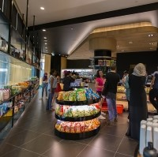

The Convenience Store can be found besides the Women's Gym on Level 1 of the Campus Center (C2) building of New York University Abu Dhabi. Open daily, the Convenience Store sells an extensive range of groceries, fresh produce, baked items, frozen foods, ice cream, toiletries and other daily necessities. Payment can be done using Campus Dirhams as well as with actual money.
Open Hours: 8am-8pm
 Convenience Store
Convenience Store